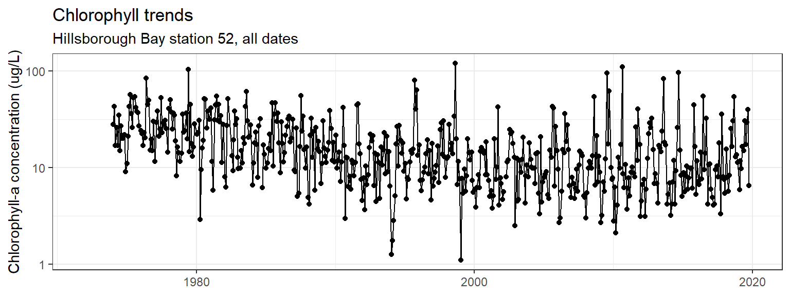
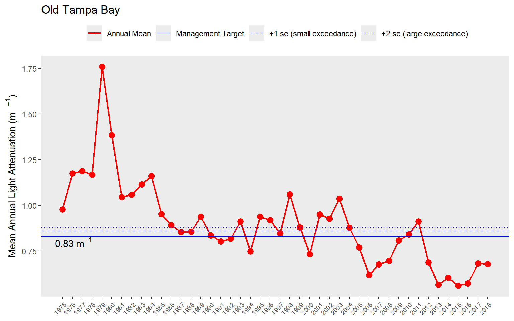
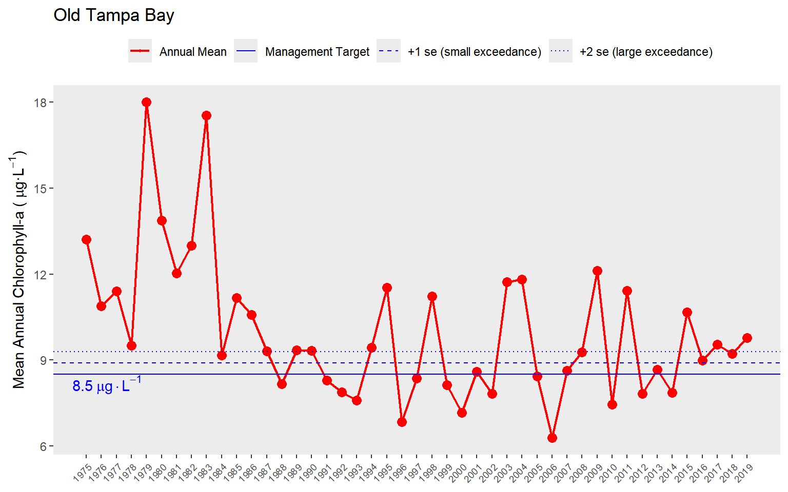
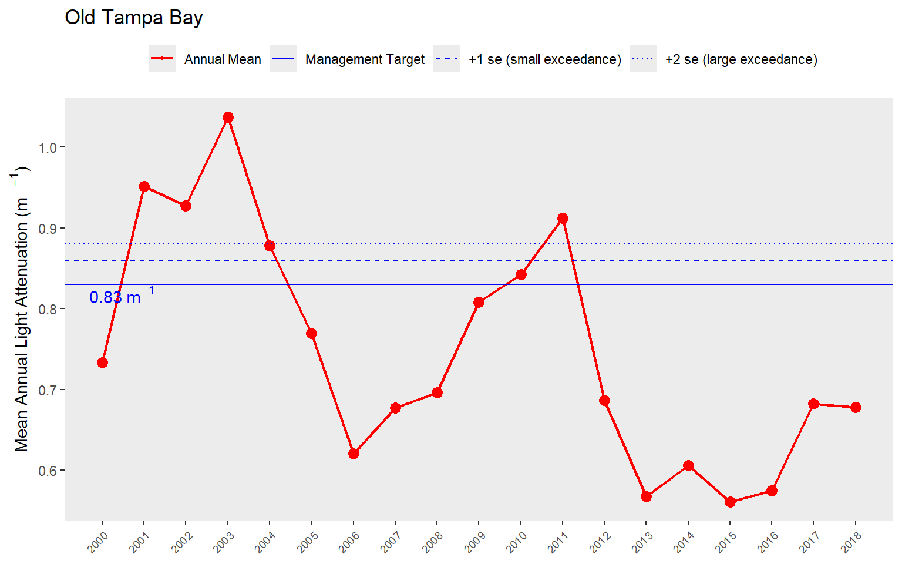
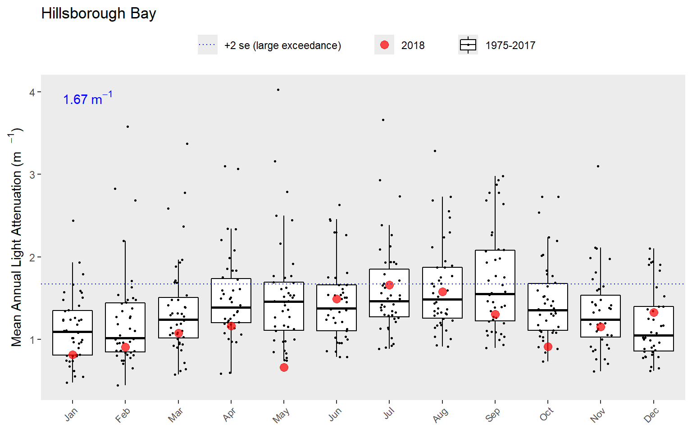
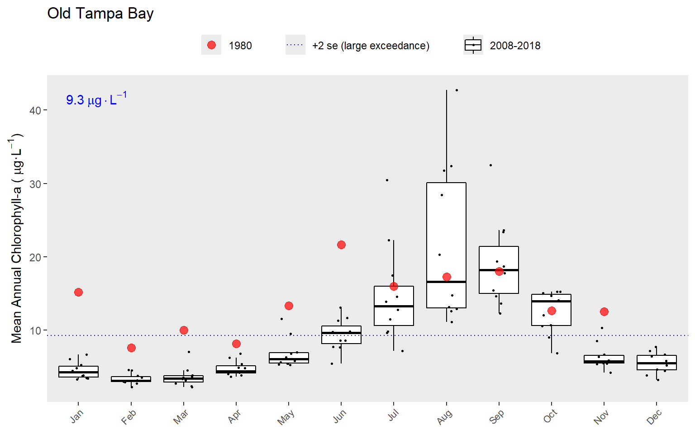
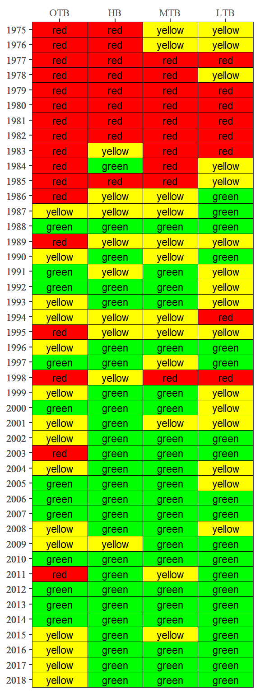
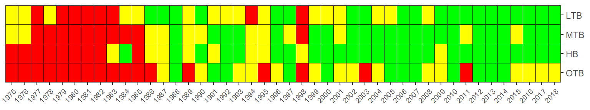
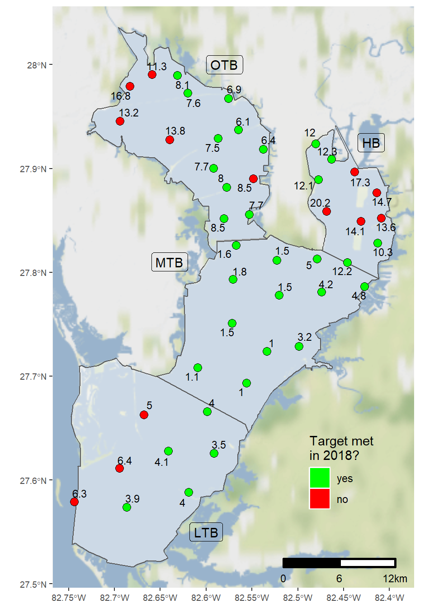
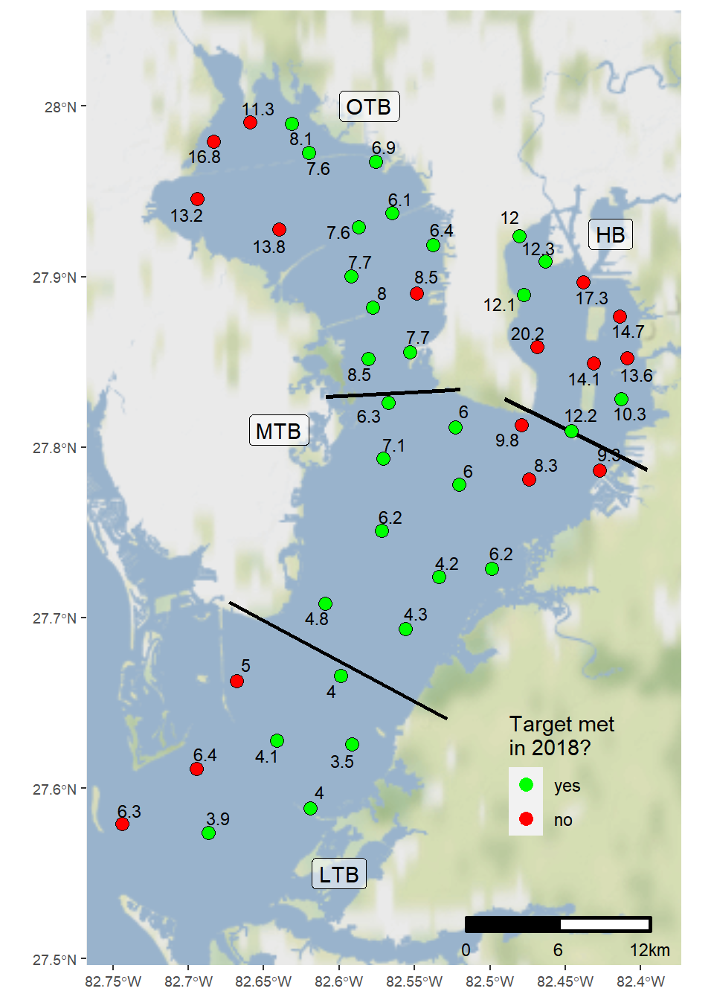

Background
The environmental recovery of Tampa Bay is an exceptional success story for coastal water quality management. Nitrogen loads in the mid 1970s have been estimated at \(8.2 \times 10^6\) kg yr\(^{-1}\), with approximately \(5.5 \times 10^6\) kg yr\(^{-1}\) entering the upper Bay alone [1]. Reduced water clarity associated with phytoplankton biomass contributed to a dramatic reduction in the areal coverage of seagrass [3] and development of hypoxic events, causing a decline in benthic faunal production [4]. Extensive efforts to reduce nutrient loads to the Bay occurred by the late 1970s, with the most notable being improvements in infrastructure for wastewater treatment in 1979. Improvements in water clarity and decreases in chlorophyll concentrations were observed Bay-wide in the 1980s, with conditions generally remaining constant to present day [5].
Tracking changes in environmental condition from the past to present day would not have been possible without a long-term monitoring dataset. Data have been collected monthly by the Environmental Protection Commission of Hillsborough County since 1974 [6,7]. Samples are taken at forty-five stations using by water collection or monitoring sonde at bottom, mid- or surface depths, depending on parameter. The locations of monitoring stations are fixed and cover the entire Bay from the uppermost mesohaline sections to the lowermost euhaline portions that have direct interaction with the Gulf of Mexico. Up to 515 observations are available for different parameters at each station, e.g., nitrogen, chlorophyll-a, and secchi depth.

Locations of long-term monitoring stations in Tampa Bay. The Bay is separated into four segments defined by chemical, physical, and geopolitical boundaries.
Package goal
Data collected from the monitoring program are processed and maintained in a spreadsheet titled RWMDataSpreadsheet_ThroughCurrentReportMonth.xlsx at ftp://ftp.epchc.org/EPC_ERM_FTP/WQM_Reports/. These data include observations at all stations and for all parameters throughout the period of record. To date, there have been no systematic tools for importing, analyzing, and reporting information from these data. The tbeptools package provides was developed to address this need.
Functions in tbeptools fall in three categories depending on mode of use. Each function is named using a prefix for the mode of use, followed by what the function does. The prefixes are:
read: Import current data from the main ftp site.anlz: Analyze or summarize the imported data.show: Create a plot of the analyzed data.
The following shows all functions provided in tbeptools, organized by prefix.
Read
read_chkdate(): Compare date of local xlsx file with the same file on the serverread_dlcurrent(): Download latest water quality file from epchc.orgread_formwq(): Format water quality dataread_importwq(): Load local water quality file
Analyze
anlz_attain(): Get attainment categoriesanlz_attainsite(): Get site attainmentsanlz_avedat(): Estimate annual meansanlz_avedatsite(): Estimate annual means by siteanlz_refs(): Convert references csv to bib entriesanlz_tdlcrk(): Estimate tidal creek report card scoresanlz_yrattain(): Get attainment categories for a selected year
Show
show_boxplot(): Plot monthly chlorophyll or light attenuation values for a bay segmentshow_matrix(): Create a colorized table for indicator reportingshow_reactable(): Create a reactable table for reporting matrices, used internally onlyshow_segmatrix(): Create a colorized table for water quality outcomes and exceedances by segmentshow_sitemap(): Plot a map of water quality stations for a selected year, with targetsshow_tdlcrk(): Make a map for tidal creek report cardshow_thrplot(): Plot annual water quality values, targets, and thresholds for a bay segmentshow_wqmatrix(): Create a colorized table for chlorophyll or light attenuation exceedances
The functions can be easily found in RStudio after loading the package and typing the prefix at the command line. An autofill dialog box will pop up showing all functions that apply for the prefix. This eliminates the need for searching for individual functions if all you know is the category of function you need (e.g., read, anlz, or show). For example:

Searching for functions in tbeptools by typing in the prefix.
Installing tbeptools
Begin by installing the package from GitHub. The source code is available on the tbep-tech GitHub group web page: https://github.com/tbep-tech/tbeptools.
First, install the devtools package, load devtools, then install and load tbeptools. Note that tbeptools only needs to be installed once, but it needs to be loaded every new R session (i.e., library(devtools)).
After the package is loaded, you can view the help files for each function by typing a question mark followed by the function name, e.g., ?read_importwq, on the console. The help files provide a brief description of what each function does and the required arguments that are needed to run the function.
The help file for read_importwq.
In the above example, the read_importwq() functions accepts six arguments. All but one argument have default values that change the behavior of the function. In most cases, the default values are appropriate. The only required argument is xlsx that specifies a path where a local excel file is located. The details of this function are described below.
Read
There are 4 functions in tbeptools for reading or importing data from the main ftp website listed above:
read_chkdate(): Compare date of local xlsx file with the same file on the serverread_dlcurrent(): Download latest water quality file from epchc.orgread_formwq(): Format water quality dataread_importwq(): Load local water quality file
The main function is read_importwq() - the remainder are all used within read_importwq() to accomplish different tasks when importing the data. This function downloads the latest file if one is not already available at the location specified by the xlsx input argument.
First, create a character path for the location of the file. If one does not exist, specify a desired location and name for the downloaded file. Here, we want to put the file in the vignettes folder and name is 2018_Results_updated.xls. Note that this file path is relative to the root working directly for the current R session. You can view the working directory with getwd().
Now we pass this xlsx object to the read_importwq() function.
#> Error in read_importwq("empty") : file.exists(xlsx) is not TRUEWe get an error message from the function indicating that the file is not found. This makes sense because the file doesn’t exist yet, so we need to tell the function to download the latest file. This is done by changing the download_latest_file argument to TRUE (the default is FALSE).
#> File vignettes/2018_Results_updated.xls does not exist, replacing with downloaded file...
#> trying URL 'ftp://ftp.epchc.org/EPC_ERM_FTP/WQM_Reports/RWMDataSpreadsheet_ThroughCurrentReportMonth.xlsx'
length 24562051 bytes (23.4 MB)Now we get the same message, but with an indication that file on the server is being downloaded. We’ll have the data downloaded and saved to the epcdata object after it finishes downloading.
If we try to run the function again after downloading the data from the server, we get the following message. This check is done to make sure that the data are not unnecessarily downloaded if the current matches the file on the server.
#> File is current...Every time that tbeptools is used to work with the monitoring data, read_importwq() should be used to import the data. You will always receive the message File is current... if your local file matches the one on the server. However, new data are regularly collected and posted on the server. If download_latest_file = TRUE and your local file is out of date, you will receive the following message:
#> Replacing local file with current...The additional arguments in read_importwq() can be used to troubleshoot the download if the connection to the server is unsuccessful. Specifically, connecttimeout specifies the maximum number of seconds to wait before a timeout error occurs. You can try increasing this number from the default of 10 seconds if the connection is unsuccessful, although the connection typically takes only a few seconds if successful. The tryurl argument indicates if the data are requested again from the server if the first attempt is unsuccessful. This is repeated if tryurl = TRUE until a successful connection is made.
The final argument na indicates which fields in the downloaded spreadsheet are treated as blank values and assigned to NA. Any number of strings can be added to this function to replace fields with NA values.
After the data are successfully imported, you can view them from the assigned object:
epcdata
#> # A tibble: 25,669 x 14
#> bay_segment epchc_station SampleTime yr mo Latitude Longitude
#> <chr> <dbl> <dttm> <dbl> <dbl> <dbl> <dbl>
#> 1 HB 6 2019-12-09 09:24:00 2019 12 27.9 -82.5
#> 2 HB 7 2019-12-09 09:33:00 2019 12 27.9 -82.5
#> 3 HB 8 2019-12-09 11:42:00 2019 12 27.9 -82.4
#> 4 MTB 9 2019-12-09 10:58:00 2019 12 27.8 -82.4
#> 5 MTB 11 2019-12-09 09:49:00 2019 12 27.8 -82.5
#> 6 MTB 13 2019-12-09 10:00:00 2019 12 27.8 -82.5
#> 7 MTB 14 2019-12-09 10:37:00 2019 12 27.8 -82.5
#> 8 MTB 16 2019-12-17 10:13:00 2019 12 27.7 -82.5
#> 9 MTB 19 2019-12-17 10:31:00 2019 12 27.7 -82.6
#> 10 LTB 23 2019-12-17 14:44:00 2019 12 27.7 -82.6
#> # ... with 25,659 more rows, and 7 more variables: Total_Depth_m <dbl>,
#> # Sample_Depth_m <dbl>, sd_m <dbl>, chla <dbl>, Sal_Top_ppth <dbl>,
#> # Sal_Mid_ppth <dbl>, Sal_Bottom_ppth <dbl>These data include the bay segment name, station number, sample time, year, month, latitude, longitude, station depth, sample depth, secchi depth, and chlorophyll. Note that the monitoring data include additional parameters. Chlorophyll and secchi depth are currently the only parameters returned by read_importwq() given the reporting indicators used below.
Analyze
The analyze functions are used primarily to summarize the data returned by read_importwq().
anlz_attain(): Get attainment categoriesanlz_attainsite(): Get site attainmentsanlz_avedat(): Estimate annual meansanlz_avedatsite(): Estimate annual means by siteanlz_refs(): Convert references csv to bib entriesanlz_tdlcrk(): Estimate tidal creek report card scoresanlz_yrattain(): Get attainment categories for a selected year
The functions anlz_avedat() and anlz_avedatsite() summarize the station data by bay segments or by sites, respectively. Both functions return annual means for chlorophyll and light attenuation (based on Secchi depth measurements) and monthly means by year for chlorophyll and light attenuation. These summaries are then used to determine if bay segment targets for water quality are met using the anlz_attain() and anlz_attainsite() function.
Here we use anlz_avedat() to summarize the data by bay segment to estimate annual and monthly means for chlorophyll and light attenuation. The output is a two-element list for the annual (ann) and monthly (mos) means by segment.
avedat <- anlz_avedat(epcdata)
avedat
#> $ann
#> # A tibble: 560 x 4
#> bay_segment yr var val
#> <chr> <dbl> <chr> <dbl>
#> 1 HB 1974 mean_chla 22.4
#> 2 HB 1975 mean_chla 27.9
#> 3 HB 1976 mean_chla 29.5
#> 4 HB 1977 mean_chla 32.5
#> 5 HB 1978 mean_chla 22.0
#> 6 HB 1979 mean_chla 29.7
#> 7 HB 1980 mean_chla 22.6
#> 8 HB 1981 mean_chla 31.1
#> 9 HB 1982 mean_chla 36.1
#> 10 HB 1983 mean_chla 25.9
#> # ... with 550 more rows
#>
#> $mos
#> # A tibble: 4,357 x 5
#> yr mo bay_segment var val
#> <dbl> <dbl> <chr> <chr> <dbl>
#> 1 1974 1 HB mean_chla 36.2
#> 2 1974 1 LTB mean_chla 1.75
#> 3 1974 1 OTB mean_chla 4.4
#> 4 1974 2 HB mean_chla 42.4
#> 5 1974 2 LTB mean_chla 5.5
#> 6 1974 2 OTB mean_chla 4.07
#> 7 1974 3 HB mean_chla 14.9
#> 8 1974 3 LTB mean_chla 5.88
#> 9 1974 4 HB mean_chla 14.6
#> 10 1974 4 LTB mean_chla 1.75
#> # ... with 4,347 more rowsThis output can then be further analyzed with anlz_attain() to determine if the bay segment outcomes are met in each year. The results are used by the plotting functions described below. In short, the chl_la column indicates the categorical outcome for chlorophyll and light attenuation for each segment. The outcomes are integer values from zero to three. The relative exceedances of water quality thresholds for each segment, both in duration and magnitude, are indicated by higher integer values.
anlz_attain(avedat)
#> # A tibble: 184 x 4
#> bay_segment yr chl_la outcome
#> <chr> <dbl> <chr> <chr>
#> 1 HB 1974 3_0 yellow
#> 2 HB 1975 3_2 red
#> 3 HB 1976 3_2 red
#> 4 HB 1977 3_2 red
#> 5 HB 1978 3_3 red
#> 6 HB 1979 3_3 red
#> 7 HB 1980 3_3 red
#> 8 HB 1981 3_3 red
#> 9 HB 1982 3_3 red
#> 10 HB 1983 3_0 yellow
#> # ... with 174 more rowsSimilar information can be obtained for individual sites using anlz_avedatsite() and anlz_attainsite(). The main difference is that a yes/no column trgmetis added that indicates only if the target was above or below the segment threshold for each site.
anlz_avedatsite(epcdata) %>% anlz_attainsite
#> # A tibble: 2,070 x 9
#> bay_segment epchc_station yr var val target smallex thresh trgtmet
#> <chr> <dbl> <dbl> <chr> <dbl> <dbl> <dbl> <dbl> <chr>
#> 1 HB 6 1974 chla 25.6 13.2 14.1 15 no
#> 2 HB 6 1975 chla 24.8 13.2 14.1 15 no
#> 3 HB 6 1976 chla 33.0 13.2 14.1 15 no
#> 4 HB 6 1977 chla 43.9 13.2 14.1 15 no
#> 5 HB 6 1978 chla 28.5 13.2 14.1 15 no
#> 6 HB 6 1979 chla 27.2 13.2 14.1 15 no
#> 7 HB 6 1980 chla 23.8 13.2 14.1 15 no
#> 8 HB 6 1981 chla 41.0 13.2 14.1 15 no
#> 9 HB 6 1982 chla 25.4 13.2 14.1 15 no
#> 10 HB 6 1983 chla 25.9 13.2 14.1 15 no
#> # ... with 2,060 more rowsThe condition of tidal creeks can be evaluated using the anlz_tldcrk() function. View the Tidal Creek Assessment vignette for additional information.
Show
The plotting functions are used to view long-term trends for each bay segment and annual results for the overall water quality assessment:
show_boxplot(): Plot monthly chlorophyll or light attenuation values for a bay segmentshow_matrix(): Create a colorized table for indicator reportingshow_reactable(): Create a reactable table for reporting matrices, used internally onlyshow_segmatrix(): Create a colorized table for water quality outcomes and exceedances by segmentshow_sitemap(): Plot a map of water quality stations for a selected year, with targetsshow_tdlcrk(): Make a map for tidal creek report cardshow_thrplot(): Plot annual water quality values, targets, and thresholds for a bay segmentshow_wqmatrix(): Create a colorized table for chlorophyll or light attenuation exceedances
External package libraries in R can be used to plot the time series data. Here’s an example using the popular ggplot2 package. Some data wrangling with the dplyr is done first to filter the data we want to plot.
toplo <- epcdata %>%
filter(epchc_station == '52')
ggplot(toplo, aes(x = SampleTime, y = chla)) +
geom_line() +
geom_point() +
scale_y_log10() +
labs(
y = 'Chlorophyll-a concentration (ug/L)',
x = NULL,
title = 'Chlorophyll trends',
subtitle = 'Hillsborough Bay station 52, all dates'
) +
theme_bw()The show_thrplot() function provides a more descriptive assessment of annual trends for a chosen bay segment relative to defined targets or thresholds. In this plot we show the annual averages across stations Old Tampa bay (bay_segment = "OTB") for chlorophyll (thr = "chla"). The red line shows annual trends and the horizontal blue lines indicate the thresholds and targets for chlorophyll-a that are specific to Old Tampa Bay. The dashed and dotted blue lines indicate +1 and +2 standard errors for the management target shown by the filled line. The target and standard errors are considered when identifying the annual segment outcome for chlorophyll.

We can show the same plot but for light attenuation by changing the thr = "chla" to thr = "la". Note the change in the horizontal reference lines for the light attenuation target.

The year range to plot can also be specified using the yrrng argument, where the default is yrrng = c(1975, 2018).

The show_thrplot() function uses results from the anlz_avedat() function. For example, you can retrieve the values from the above plot as follows:
epcdata %>%
anlz_avedat %>%
.[['ann']] %>%
filter(bay_segment == 'OTB') %>%
filter(var == 'mean_la') %>%
filter(yr >= 2000 & yr <= 2018)
#> # A tibble: 19 x 4
#> bay_segment yr var val
#> <chr> <dbl> <chr> <dbl>
#> 1 OTB 2000 mean_la 0.733
#> 2 OTB 2001 mean_la 0.951
#> 3 OTB 2002 mean_la 0.927
#> 4 OTB 2003 mean_la 1.04
#> 5 OTB 2004 mean_la 0.878
#> 6 OTB 2005 mean_la 0.769
#> 7 OTB 2006 mean_la 0.620
#> 8 OTB 2007 mean_la 0.677
#> 9 OTB 2008 mean_la 0.696
#> 10 OTB 2009 mean_la 0.808
#> 11 OTB 2010 mean_la 0.842
#> 12 OTB 2011 mean_la 0.912
#> 13 OTB 2012 mean_la 0.687
#> 14 OTB 2013 mean_la 0.567
#> 15 OTB 2014 mean_la 0.606
#> 16 OTB 2015 mean_la 0.560
#> 17 OTB 2016 mean_la 0.575
#> 18 OTB 2017 mean_la 0.682
#> 19 OTB 2018 mean_la 0.678Similarly, the show_boxplot() function provides an assessment of seasonal changes in chlorophyll or light attenuation values by bay segment. The most recent year is highlighted in red by default. This allows a simple evaluation of how the most recent year compared to historical averages. The large exceedance value is shown in blue text and as the dotted line. This corresponds to a “large” magnitude change of +2 standard errors above the bay segment threshold and is the same dotted line shown in show_thrplot().


A different subset of years and selected year of interest can also be viewed by changing the yrrng and yrsel arguments. Here we show 1980 compared to monthly averages for the last ten years.

The show_thrplot() function is useful to understand annual variation in chlorophyll and light attenuation relative to management targets for each bay segment. The information from these plots can provide an understanding of how the annual reporting outcomes are determined. As noted above, an outcome integer from zero to three is assigned to each bay segment for each annual estimate of chlorophyll and light attenuation. These outcomes are based on both the exceedance of the annual estimate above the threshold or target (blue lines in show_thrplot()) and duration of the exceedance for the years prior. The following graphic describes this logic [8].

Outcomes for annual estimates of water quality are assigned an integer value from zero to three depending on both magnitude and duration of the exceedence.
These outcomes are assigned for both chlorophyll and light attenuation. The duration criteria are determined based on whether the exceedance was observed for years prior to the current year. The exceedance criteria for chlorophyll and light-attenuation are specific to each segment. The tbeptools package contains a targets data file that is a reference for determining annual outcomes. This file is loaded automatically with the package and can be viewed from the command line.
targets
#> bay_segment name chla_target chla_smallex chla_thresh la_target
#> 1 OTB Old Tampa Bay 8.5 8.9 9.3 0.83
#> 2 HB Hillsborough Bay 13.2 14.1 15.0 1.58
#> 3 MTB Middle Tampa Bay 7.4 7.9 8.5 0.83
#> 4 LTB Lower Tampa Bay 4.6 4.8 5.1 0.63
#> la_smallex la_thresh
#> 1 0.86 0.88
#> 2 1.63 1.67
#> 3 0.87 0.91
#> 4 0.66 0.68The final plotting function is show_matrix(), which creates an annual reporting matrix that reflects the combined outcomes for chlorophyll and light attenuation. Tracking the attainment of bay segment specific targets for these indicators provides the framework from which bay management actions are developed and initiated. For each year and segment, a color-coded management action is assigned:
Stay the Course: Continue planned projects. Report data via annual progress reports and Baywide Environmental Monitoring Report.
Caution: Review monitoring data and nitrogen loading estimates. Begin/continue TAC and Management Board development of specific management recommendations.
On Alert: Finalize development and implement appropriate management actions to get back on track.
The management category or action is based on the combination of outcomes for chlorophyll and light attenuation [8].

Management action categories assigned to each bay segment and year based on chlorophyll and light attenuation outcomes.
The results can be viewed with show_matrix().

The matrix is also a ggplot object and its layout can be changed using ggplot elements. Note the use of txtsz = NULL to remove the color labels.
show_matrix(epcdata, txtsz = NULL) +
scale_y_continuous(expand = c(0,0), breaks = c(1975:2018)) +
coord_flip() +
theme(axis.text.x = element_text(angle = 45, hjust = 1, size = 7))
If preferred, the matrix can also be returned in an HTML table that can be sorted and scrolled.
Use a sufficiently large number to view the entire matrix.
Results can also be obtained for a selected year. Outcomes can be returned in tabular format with anlz_yrattain(). This table also shows segment averages for chlorophyll and light attenuation, including the associated targets.
anlz_yrattain(epcdata, yrsel = 2018)
#> # A tibble: 4 x 6
#> bay_segment chla_val chla_target la_val la_target outcome
#> <fct> <dbl> <dbl> <dbl> <dbl> <chr>
#> 1 OTB 9.22 8.5 0.678 0.83 yellow
#> 2 HB 13.9 13.2 1.09 1.58 green
#> 3 MTB 7.05 7.4 0.570 0.83 green
#> 4 LTB 4.65 4.6 0.593 0.63 greenA map showing if individual sites achieved chlorophyll targets can be obtained with show_sitemap(). The station averages for chlorophyll for the selected year are shown next to each point. Stations in red failed to meet the segment target.
Bay segment exceedances can also be viewed in a matrix using show_wqmatrix(). The thresholds for these values correspond to the Florida DEP criteria (or a large exceedance defined as +2 standard errors above the segment target).

By default, the show_wqmatrix() function returns chlorophyll exceedances by segment. Light attenuation exceedances can be viewed by changing the param argument.
Finally, the results from show_matrix() and show_wqmatrix() can be combined for an individual segment using the show_segmatrix() function. This is useful to understand which water quality parameter is driving the management outcome for a given year. The plot shows the light attenuation and chlorophyll outcomes from show_wqmatrix() next to the segment management outcomes from show_matrix(). Only one segment can be plotted for each function call.

From these plots, we can quickly view a summary of the environmental history of water quality in Tampa Bay. Degraded conditions were common early in the period of record, particularly for Old Tampa Bay and Hillsborough Bay. Conditions began to improve by the late 1980s and early 1990s, with good conditions persisting to present day. However, recent trends in Old Tampa Bay have shown conditions changing from “stay the course” to “caution”.
References
[1] A. Poe, K. Hackett, S. Janicki, R. Pribble, A. Janicki, Estimates of total nitrogen, total phosphorus, total suspended solids, and biochemical oxygen demand loadings to Tampa Bay, Florida: 1999-2003, Tampa Bay Estuary Program, St. Petersburg, Florida, USA, 2005. https://tbeptech.org/TBEP_TECH_PUBS/2005/TBEP_02_05Loadings99_03.pdf.
[2] H. Greening, A. Janicki, Toward reversal of eutrophic conditions in a subtrophical estuary: Water quality and seagrass response to nitrogen loading reductions in Tampa Bay, Florida, USA, Environmental Management. 38 (2006) 163–178.
[3] D.A. Tomasko, C.A. Corbett, H.S. Greening, G.E. Raulerson, Spatial and temporal variation in seagrass coverage in Southwest Florida: Assessing the relative effects of anthropogenic nutrient load reductions and rainfall in four contiguous estuaries, Marine Pollution Bulletin. 50 (2005) 797–805.
[4] S.L. Santos, J.L. Simon, Marine soft-bottom community establishment following annual defaunation: Larval or adult recruitment, Marine Ecology - Progress Series. 2 (1980) 235–241.
[5] M.W. Beck, J.D. Hagy III, Adaptation of a weighted regression approach to evaluate water quality trends in an estuary, Environmental Modelling and Assessment. 20 (2015) 637–655. https://doi.org/10.1007/s10666-015-9452-8.
[6] E.T. Sherwood, H.S. Greening, A.J. Janicki, D.J. Karlen, Tampa Bay estuary: Monitoring long-term recovery through regional partnerships, Regional Studies in Marine Science. 4 (2016) 1–11. https://doi.org/10.1016/j.rsma.2015.05.005.
[7] TBEP (Tampa Bay Estuary Program), Tampa Bay Water Atlas, (2017).
[8] A. Janicki, D. Wade, J.R. Pribble, Development of a process to track the status of chlorophyll and light attenuation to support seagrass restoration goals in Tampa Bay, Tampa Bay National Estuary Program, St. Petersburg, Florida, 1999. https://tbeptech.org/TBEP_TECH_PUBS/2000/TBEP_04_00Chlor-A.pdf.